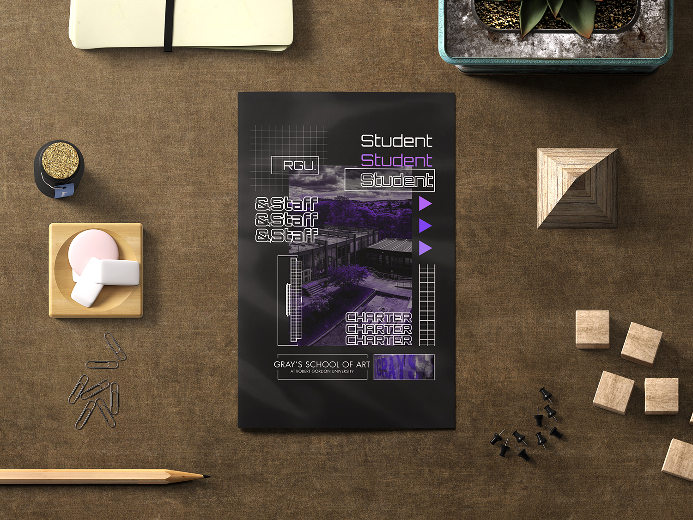
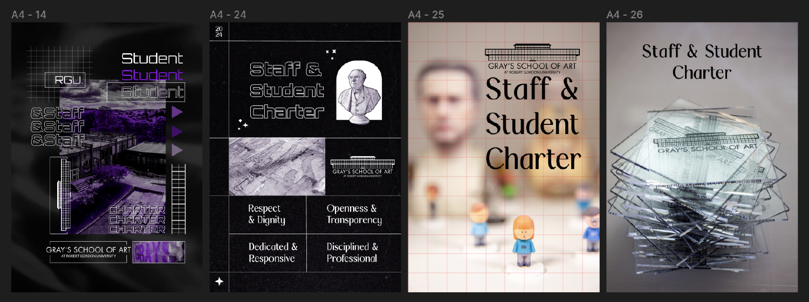
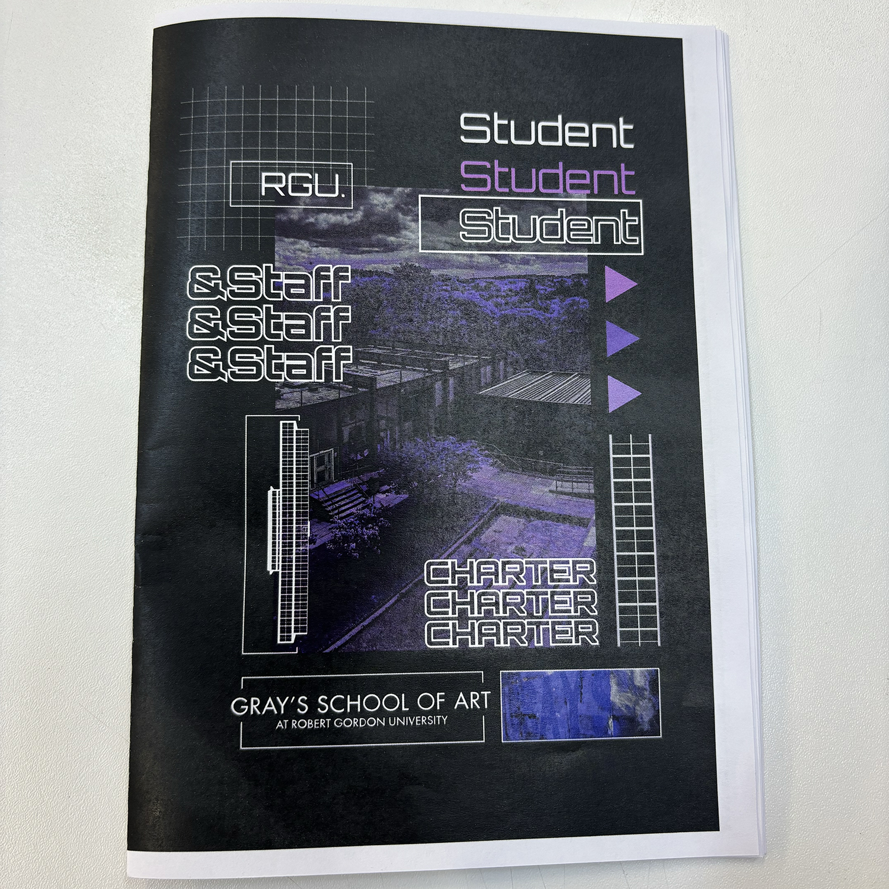

Date
Nov 2023- Jan 2024
Role
Graphic Designer
{ the challenge }
How can I make the student charter stand out in a way that resonates with art students?
{ old student and staff charter }
{ Cover }
01
Crafting the ideal School of Art charter cover wasn't a straight line. I delved into both classic styles aligning with the university's image and bolder, unconventional options designed to pique interest and spark curiosity. This exploration broadened the range of possible outcomes, ultimately leading to the darker, more unconventional cover. This cover embodies the School of Art's spirit of pushing boundaries and inspiring creativity through unconventional means.


